2:25:13 · 43 OPERE
Cognizione e validità. Disagreement, Judgment and Reality.
Il filo del discorso
Da che cosa dipende la validità di un giudizio quando persone competenti, di fronte agli stessi elementi, giungono a conclusioni diverse? La conversazione parte da una traccia preparatoria e dalla linea divisa della Repubblica di Platone. Il disegno distingue quattro modi del conoscere: congettura o immaginazione, credenza, ragionamento per ipotesi e intellezione. Il bastone che appare spezzato nell’acqua e il triangolo pensato senza disegnarlo mostrano perché percepire, spiegare e astrarre siano operazioni diverse.
Leggi la sintesi completaRiduci la sintesi
Il posto del Bene nella gerarchia platonica apre una domanda che attraversa l’intero incontro: che rapporto c’è tra conoscere e agire bene? Con Kant, il giudizio diventa un modo di collegare concetti e interrogare le ragioni dell’assenso. La discussione passa al disaccordo tra pari: chi può essere considerato un pari quando i criteri di valutazione sono diversi? L’esempio della revisione tra pari mette a fuoco il peso delle istituzioni; Pinocchio e Il vento tra i salici fanno emergere la differenza tra stabilire un fatto e valutare un’opera. Un passo delle Enneadi di Plotino torna due volte come immagine dell’apprendimento: l’insegnamento può indicare una via, mentre il percorso richiede un atto di chi apprende. Il programma di Hilbert, il saggio di Gödel e i riferimenti a Turing e Cohen introducono limiti distinti: incompletezza in sistemi formali, limiti della computabilità e indipendenza dell’ipotesi del continuo. La dimostrazione di Wiles del teorema di Fermat offre un esempio di come strumenti nuovi possano dare accesso a un problema antico. Il dialogo usa questi risultati anche per discutere l’intelligenza artificiale e il pensiero. La loro estensione alla capacità di pensare delle macchine è una tesi della conversazione; gli articoli citati riguardano problemi formali circoscritti. Nelle domande finali il problema si sposta dai criteri del giudizio alle scelte. Gli smeraldi di Goodman introducono il problema dell’induzione; Mentire con le statistiche di Darrell Huff accompagna il confronto su che cosa un dato possa dire di una decisione morale. L’imperativo categorico, il dissenso e la difesa della diversità si intrecciano con «Zinco» di Primo Levi. Nel finale un interlocutore chiede se anche una persona arrogante possa formulare un giudizio valido. La domanda riapre il confronto tra correttezza di un’asserzione, disposizione a rivedere il proprio giudizio e responsabilità delle proprie azioni. I minutaggi derivano dai sottotitoli automatici italiani. I riferimenti bibliografici distinguono i titoli citati dalle allusioni ricostruite. La traccia preparatoria è discussa nel video e la sua provenienza editoriale non è indicata.
I libri nel discorso

La Repubblica
Identificazione probabile
Note sul riferimento
Copertina: Laterza · La Repubblica · edizione con testo a fronte di riferimento
Immagine associata all’ISBN di riferimento e controllata visivamente; edizione e traduzione non identificate come quelle citate o lette nel video.
La linea divisa rimanda al libro VI, 509d–511e, e la caverna al libro VII. Il caso dell’arma da restituire a chi non è in sé, ripreso a 1:51:20, corrisponde al libro I, 331c–d.
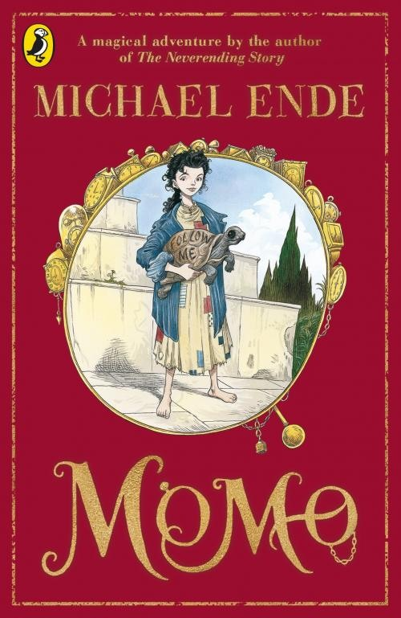
Momo
Note sul riferimento
Copertina: Puffin · edizione inglese di riferimento
Momo e i ladri di tempo sono evocati per distinguere l’immaginazione narrativa dall’eikasía platonica.
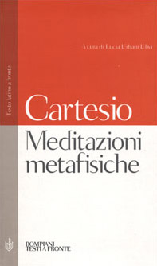
Meditazioni metafisiche (Meditationes de prima philosophia)
Identificazione probabile
Note sul riferimento
Copertina dell’edizione indicata: Bompiani, luglio 2001, ISBN 9788845291142 · a cura di Lucia Urbani Ulivi
La seconda meditazione è nominata esplicitamente nel confronto fra esistenza individuale e modernità. Una sola voce per l’opera complessiva e le sue meditazioni, non una monografia diversa per ogni capitolo. Copertina ufficiale Bompiani con testo latino a fronte e traduzione francese in appendice, edizione non certificata nel filmato.
Cartesio è richiamato nel discorso sul dubbio e sulla simulazione. Il rinvio alle Meditazioni riguarda il dubbio della prima meditazione. L’esempio moderno dei cervelli in una vasca è menzionato separatamente.
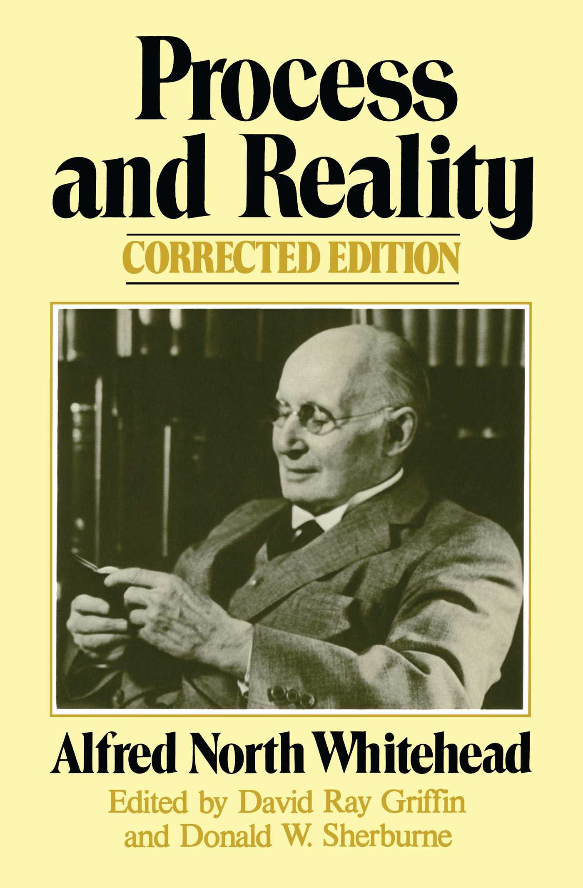
Process and Reality
Identificazione probabile
Note sul riferimento
Copertina: Process and Reality, corrected edition a cura di David Ray Griffin e Donald W. Sherburne, Free Press, edizione paperback del 1 luglio 1979, 448 pagine, ISBN 9780029345702. Opera originale del 1929; la corrected edition fu predisposta nel 1978. Copertina gialla con ritratto e nomi dei curatori.
Immagine autentica dell’opera, controllata visivamente; l’edizione di riferimento non è attribuita al filmato.
Il richiamo alle note a piè di pagina a Platone rimanda alla formula di Whitehead in Process and Reality, parte II, cap. I, § I. Il titolo non viene enunciato.
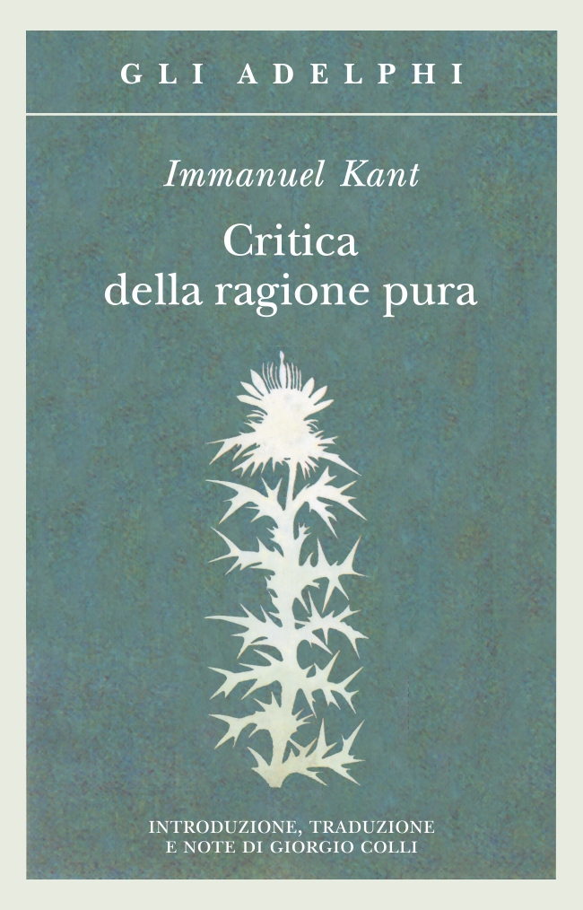
Critica della ragione pura
Identificazione probabile
Note sul riferimento
Copertina: Adelphi · Gli Adelphi 85, 1995 · traduzione e cura Giorgio Colli
Immagine autentica dell’opera, controllata visivamente; l’edizione di riferimento non è attribuita al filmato.
Il riferimento al pensare come giudicare e ai giudizi analitici e sintetici è coerente con la Critica della ragione pura. Il discorso torna sulla funzione del giudizio a 55:05.
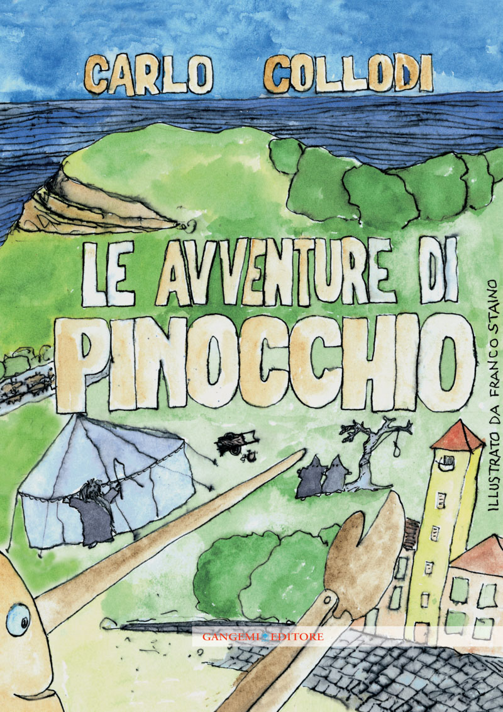
Le avventure di Pinocchio. Storia di un burattino
Note sul riferimento
Copertina: Gangemi · illustrato da Franco Staino, 2009
Immagine autentica dell’opera, controllata visivamente; l’edizione di riferimento non è attribuita al filmato.
Pinocchio è accostato a Il vento tra i salici come esempio di giudizio letterario. Più avanti il Grillo parlante viene richiamato come immagine della coscienza.
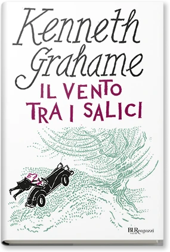
Il vento tra i salici (The Wind in the Willows)
Note sul riferimento
Copertina: Rizzoli, BUR Ragazzi, 2013, edizione cartacea ISBN 9788817068154; distinto dall’eBook ISBN 9788858658703.
Immagine autentica dell’opera, controllata visivamente; l’edizione di riferimento non è attribuita al filmato.
Il titolo è pronunciato nel confronto fra due opere per l’infanzia e serve a discutere la misurabilità di un giudizio estetico.
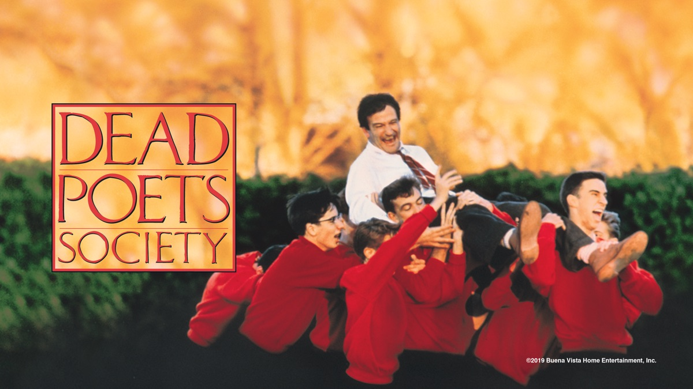
L’attimo fuggente (Dead Poets Society)
Note sul riferimento
Copertina: Buena Vista/Disney · artwork di distribuzione digitale del film 1989
Artwork orizzontale autentico Disney/Buena Vista pubblicato da Apple TV, con titolo e protagonisti; copyright 2019 dell’immagine digitale. Non copertina del romanzo, non locandina della prima uscita, non edizione identificata nel video.
Il film e la scena sulla misurazione della poesia sono citati a proposito dei criteri del giudizio estetico.
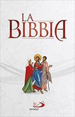
Vangelo secondo Giovanni
Identificazione probabile
Note sul riferimento
Copertina del volume completo: San Paolo, 2014 · Nuova Versione dai Testi Antichi · edizione di riferimento
Vangelo secondo Giovanni è un libro della Bibbia. L’immagine mostra il volume completo San Paolo di riferimento, non un’edizione autonoma del singolo libro e non una versione identificata nella citazione.
La frase sulla prima pietra corrisponde a Giovanni 8,7.
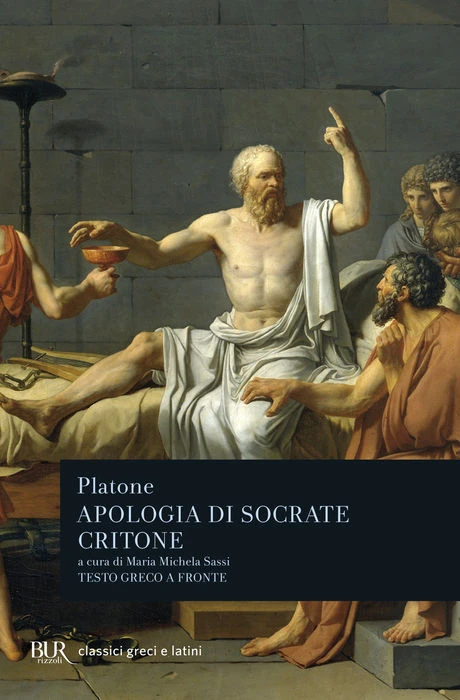
Apologia di Socrate
Identificazione probabile
Note sul riferimento
Copertina del volume Apologia di Socrate. Critone: BUR · Apologia di Socrate. Critone · a cura di Maria Michela Sassi, 1993
Copertina autentica del volume BUR contenente Apologia di Socrate e Critone. Il secondo titolo non è aggiunto come citazione del video; l’autore del testo è Platone, con Socrate come figura protagonista.
Il richiamo a Socrate e alla consapevolezza di non sapere è accostato all’Apologia, 21d.
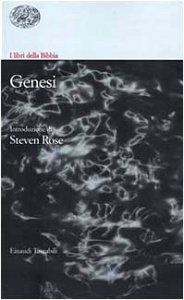
Genesi
Identificazione probabile
Note sul riferimento
Copertina: Einaudi, I libri della Bibbia / Einaudi Tascabili, 2000; introduzione di Steven Rose
Copertina dell’edizione autonoma Genesi, nella serie I libri della Bibbia, con introduzione di Steven Rose. Edizione scelta come riferimento iconografico; nessuna edizione è confermata nel video.
Il racconto della creazione e il giudizio sul creato rimandano a Genesi 1. Il relatore li mette in relazione con la libertà di scelta e richiama poi Caino e Abele, Genesi 4.
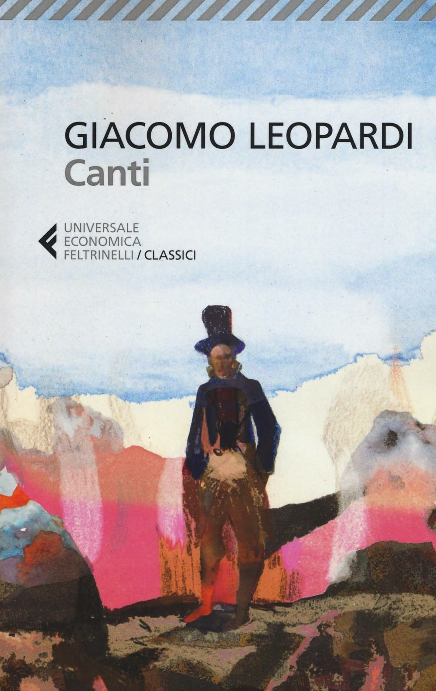
La ginestra, o fiore del deserto
Identificazione probabile
Note sul riferimento
Copertina dei Canti che contengono La ginestra: Feltrinelli · Canti, a cura di Ugo Dotti, 2016
Copertina dei Canti di Giacomo Leopardi, Feltrinelli. Il riferimento riguarda il componimento La ginestra; l’ISBN appartiene alla raccolta, non a un’edizione autonoma della poesia.
Il richiamo a Leopardi e all’immagine delle formiche sembra rinviare alla similitudine del frutto che schiaccia un formicaio nella Ginestra, vv. 202–212.
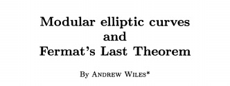
Modular elliptic curves and Fermat’s Last Theorem
Identificazione probabile
Note sul riferimento
Intestazione: Annals of Mathematics · 1995, p. 443
La dimostrazione di Andrew Wiles dell’ultimo teorema di Fermat è descritta attraverso il risultato. L’articolo del 1995 e il lavoro complementare con Richard Taylor documentano la prova.
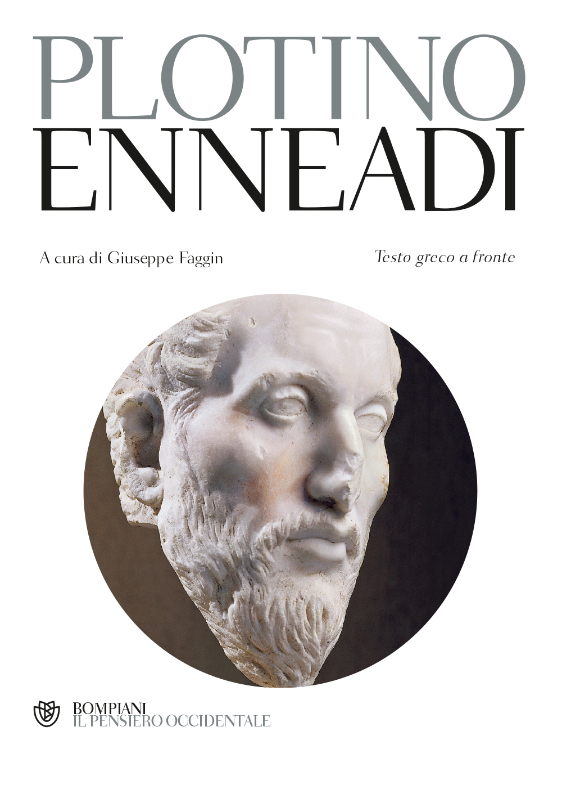
Enneadi
Note sul riferimento
Copertina: Bompiani · 2000 · traduzione di Giuseppe Faggin
Immagine autentica dell’opera, controllata visivamente; l’edizione di riferimento non è attribuita al filmato.
Autore e raccolta sono nominati. La formulazione sulla via e sulla visione si ritrova in Enneadi VI.9.4, «Sul Bene o sull’Uno». Il passo viene ripreso nel dialogo.
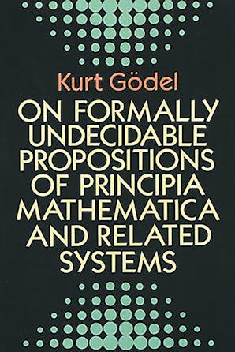
Über formal unentscheidbare Sätze der Principia Mathematica und verwandter Systeme I (Sulle proposizioni formalmente indecidibili dei Principia Mathematica e di sistemi affini I)
Identificazione probabile
Note sul riferimento
Copertina: Immagine della edizione inglese Dover, 1992, viii + 72 pagine, traduzione di B. Meltzer, introduzione di R. B. Braithwaite. Articolo originale: Monatshefte für Mathematik und Physik, 38, 1931, pp. 173–198.
Copertina autentica Dover scura con motivi di punti verdi, nome Kurt Gödel arancio e titolo inglese chiaro. È il volume della traduzione con introduzione, non la copertina del fascicolo originale del 1931 o il diverso Gödel, Escher, Bach. L’ISBN cartaceo e la bibliografia KIT identificano la ristampa 1992; non è assegnata al filmato una precisa edizione mostrata.
Il saggio sull’incompletezza è richiamato attraverso autore, tema e data del 1931. Il riferimento emerge già nell’introduzione al programma di Hilbert.
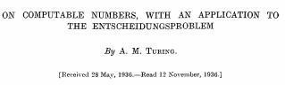
On Computable Numbers, with an Application to the Entscheidungsproblem
Identificazione probabile
Note sul riferimento
Intestazione: Proceedings of the London Mathematical Society · p. 230
Il riferimento ai limiti della computabilità nel 1936 identifica con buona probabilità il lavoro pubblicato nel 1937. Il successivo cenno alla dissertazione di Princeton riguarda Systems of Logic Based on Ordinals.
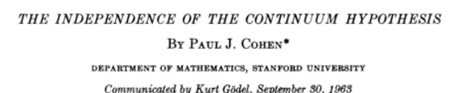
The Independence of the Continuum Hypothesis
Identificazione probabile
Note sul riferimento
Intestazione: PNAS · 1963, p. 1143
La menzione di Cohen, del 1963 e dell’indipendenza dell’ipotesi del continuo rinvia agli articoli del 1963 e 1964. L’esito riguarda l’indipendenza dagli assiomi della teoria degli insiemi, non una prova dell’ipotesi.
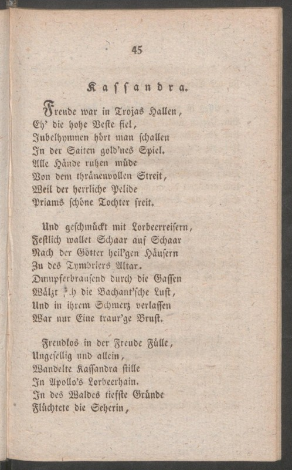
Kassandra
Note sul riferimento
Prima pagina: Gedichte, vol. II · A. F. Macklot, 1811, p. 45
La pagina è tratta da una raccolta storica conservata alla ETH-Bibliothek Zürich, Rar 38541.
La ballata Kassandra di Schiller è nominata come esempio di un testo che una risposta automatica aveva negato di riconoscere.
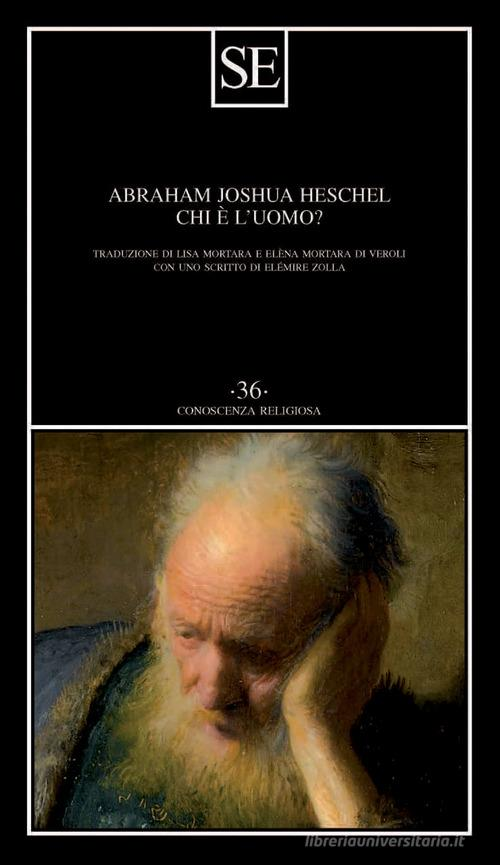
Chi è l’uomo?
Identificazione probabile
Note sul riferimento
Copertina: SE, 2023
Il nome di Heschel e la domanda in inglese rinviano a Who Is Man?. Il titolo inglese è normalizzato rispetto alla formulazione orale.
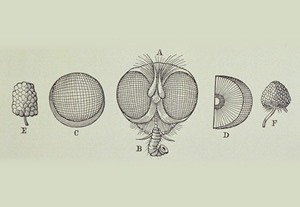
L’occhio della mosca
Identificazione probabile
Note sul riferimento
Illustrazione: Opuscoli · Palermo, 1644
Riproduzione dell’illustrazione nella mostra digitale del Museo Galileo, figura 4.
Il riferimento a Hodierna e allo studio seicentesco dell’occhio della mosca coincide con il terzo degli Opuscoli del 1644.
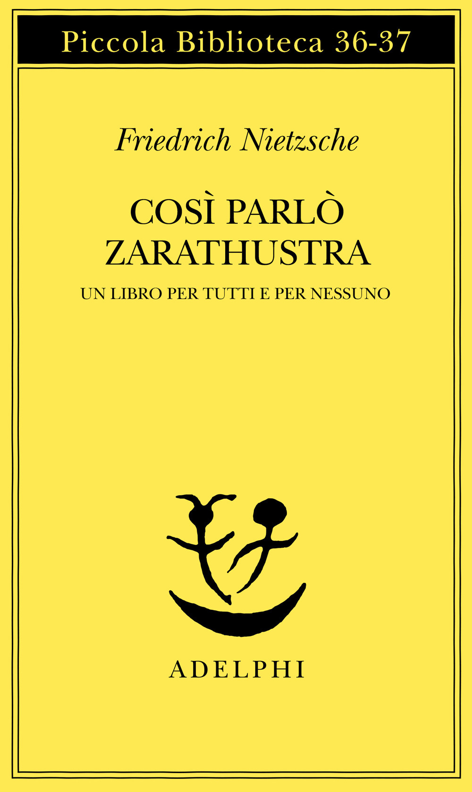
Così parlò Zarathustra
Note sul riferimento
Copertina: Adelphi · Piccola Biblioteca Adelphi · riferimento
Immagine associata all’ISBN di riferimento e controllata visivamente; edizione e traduzione non identificate come quelle citate o lette nel video.
Zarathustra e l’uomo che studia le sanguisughe rinviano al capitolo «La sanguisuga» nella quarta parte dell’opera.
Sofista
Identificazione probabile
Note sul riferimento
Copertina: Einaudi · Piccola Biblioteca Einaudi Nuova serie 402, 2008 · cura e traduzione Bruno Centrone
Immagine autentica dell’opera, controllata visivamente; l’edizione di riferimento non è attribuita al filmato.
Il «parricidio» di Parmenide richiama il Sofista, 241d, nel passaggio sul rapporto fra essere e non essere.
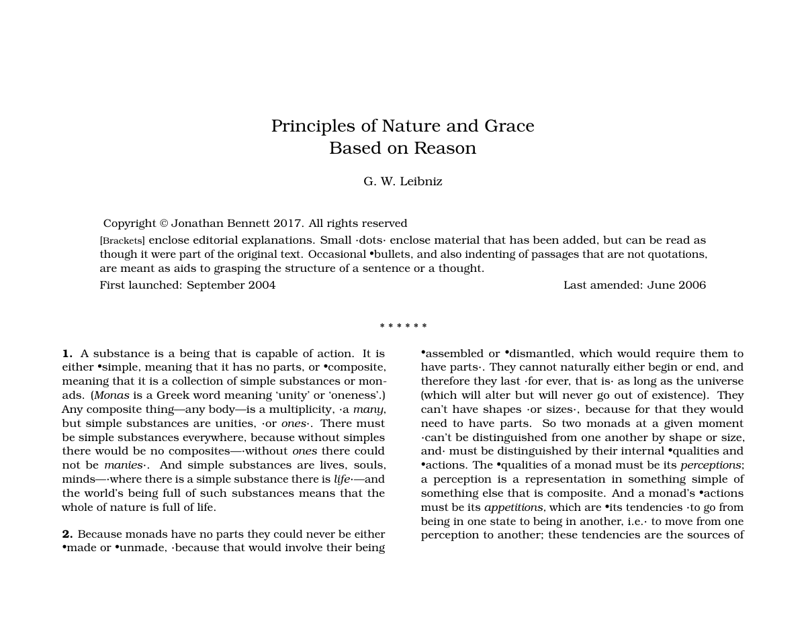
Principi della natura e della grazia fondati sulla ragione
Identificazione probabile
Note sul riferimento
Copertina: Prima pagina della traduzione inglese modernizzata di Jonathan Bennett, Early Modern Texts, PDF con copyright 2017 e revisioni 2004/2006. È una pagina del testo, non una copertina storica o un manoscritto.
Immagine autentica della medesima opera, interamente esaminata; relazione e formato dichiarati. Nessuna edizione dedotta dal titolo del video.
La domanda sul perché esista qualcosa e la ragion sufficiente rinviano ai Principi della natura e della grazia, § 7. Il titolo non è pronunciato.
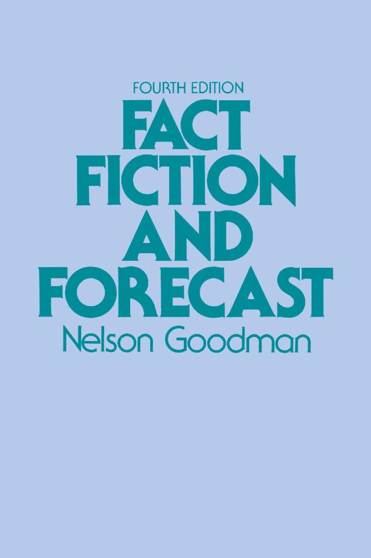
Fact, Fiction, and Forecast
Identificazione probabile
Note sul riferimento
Copertina: Harvard University Press · quarta edizione, 1983 · prefazione di Hilary Putnam
Immagine autentica dell’opera, controllata visivamente; l’edizione di riferimento non è attribuita al filmato.
Goodman e l’esempio degli smeraldi «blerdi» rinviano al problema dell’induzione discusso in Fact, Fiction, and Forecast. La questione è introdotta a 1:33:32.
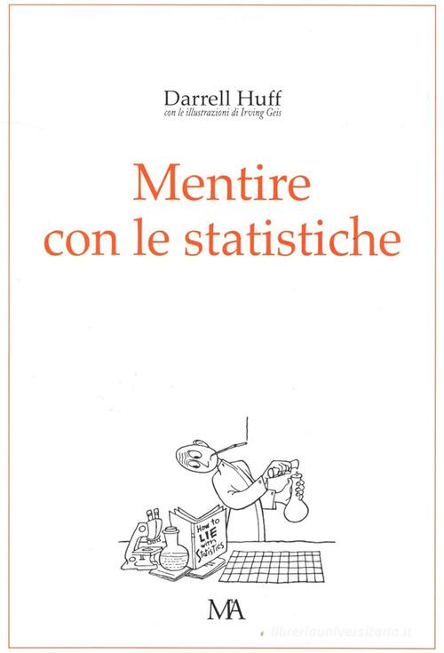
Mentire con le statistiche
Note sul riferimento
Copertina: Monti & Ambrosini · Diogene · 2007 · curatori Giancarlo Livraghi e Riccardo Puglisi
Immagine autentica dell’opera, controllata visivamente; non identifica l’edizione usata nel video.
Il titolo inglese How to Lie with Statistics viene enunciato nel confronto sui limiti dei dati in etica.
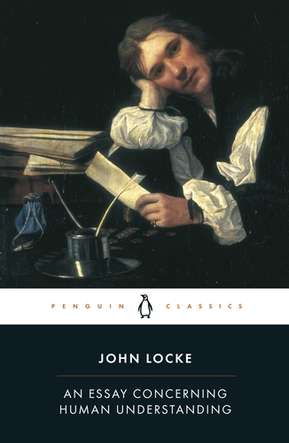
An Essay Concerning Human Understanding
Identificazione probabile
Note sul riferimento
Copertina autentica Penguin Classics UK dell’edizione curata da Roger Woolhouse, catalogata nel 2004; stesso trattato di Locke, edizione non identificata nel video.: Penguin Classics UK, Roger Woolhouse (curatore, introduzione e note), 26 agosto 2004, ISBN 9780140434828
Edizione della copertina verificata presso l’editore; il video non identifica un’edizione. Non frontespizio della prima edizione.
Il riferimento alla tabula rasa è accostato al Saggio sull’intelletto umano, II, 1, § 2, dove Locke usa l’immagine della carta bianca.

Testimony of Anthony Fauci — S. Hrg. 119-504 (29 July 2026)
Identificazione probabile
Note sul riferimento
Frontespizio: Frontespizio del resoconto ufficiale S. Hrg. 119-504, 119th Congress, second session, U.S. Government Publishing Office, 2026.
Pagina originale del documento identificato. L’identificazione nel video è probabile; nessuna edizione materialmente mostrata è confermata.
Il richiamo all’audizione e al Quinto emendamento è compatibile con il resoconto del Senato del 29 luglio 2026. La data non è detta. Il documento permette di distinguere il verbale dalla lettura polemica del relatore.
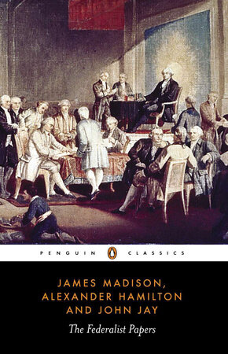
Costituzione degli Stati Uniti d’America
Note sul riferimento
Copertina della raccolta: Testo firmato il17settembre1787. Per l’immagine si usa la raccolta Penguin Classics The Federalist Papers, ISBN 9780140444957, che dichiara di includere il testo della Costituzione; non è una fotografia della pergamena originaria.
Copertina autentica di The Federalist Papers: la descrizione editoriale attesta che la raccolta comprende il testo completo della Costituzione. Non è il frontespizio costituzionale del 1787 e Hamilton, Madison e Jay non sono presentati come unici autori del documento.
L’incipit del preambolo della Costituzione statunitense è richiamato a proposito del rapporto tra popolo e governo.
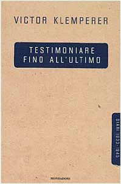
Testimoniare fino all’ultimo. Diari 1933–1945
Identificazione probabile
Note sul riferimento
Copertina: Mondadori, Le scie, 2000, a cura di Walter Nowojski, edizione italiana a cura di Anna Ruchat e Paola Quadrelli, prefazione di Cesare Segre; ISBN 9788804422938.
Immagine autentica dell’opera, controllata visivamente; l’edizione di riferimento non è attribuita al filmato.
Si citano i diari di Klemperer senza pronunciarne il titolo editoriale o delimitarne il periodo. Il rinvio propone i diari del 1933–1945.
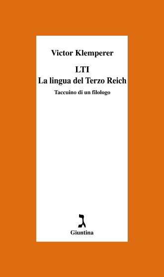
LTI. La lingua del Terzo Reich. Taccuino di un filologo
Note sul riferimento
Copertina: Giuntina, Schulim Vogelmann 72, 355 pagine, ISBN 9788880570721. La pagina editoriale indica anno 1999 e tre riedizioni; altri cataloghi datano esemplari 1998 o 2008, senza che questo identifichi la copia del filmato. A cura di Elke Fröhlich, traduzione di Paola Buscaglione, prefazione di Michele Ranchetti. Originale tedesco LTI. Notizbuch eines Philologen, 1947.
Immagine autentica dell’opera, controllata visivamente; l’edizione di riferimento non è attribuita al filmato.
Si richiama la lingua del Terzo Reich e il lavoro di Victor Klemperer.
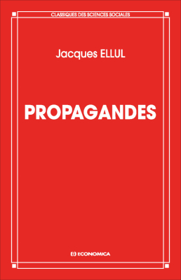
Propagandes
Note sul riferimento
Copertina: Economica · Classiques des sciences sociales · ISBN 9782717818482
Immagine autentica dell’opera, controllata visivamente; l’edizione di riferimento non è attribuita al filmato.
Ellul e Propaganda vengono richiamati come lettura da affiancare a Klemperer. Il titolo originale è Propagandes.
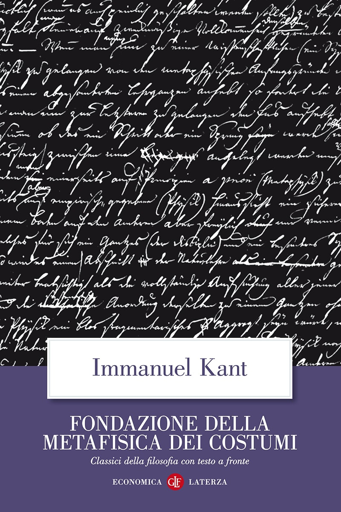
Fondazione della metafisica dei costumi
Identificazione probabile
Note sul riferimento
Copertina: Laterza · Economica Laterza 122 · Filippo Gonnelli, edizione 1997 e ristampe
Immagine autentica dell’opera, controllata visivamente; l’edizione di riferimento non è attribuita al filmato.
La formulazione dell’imperativo categorico in termini di principio universale rimanda alla Fondazione, Akademie IV, 421. Il titolo non è pronunciato.
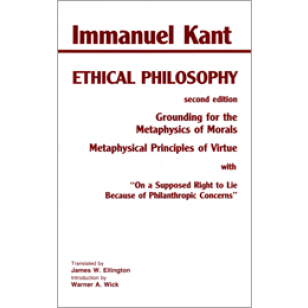
Über ein vermeintes Recht aus Menschenliebe zu lügen
Identificazione probabile
Note sul riferimento
Copertina: Copertina della raccolta Ethical Philosophy, seconda edizione, Hackett 1995, traduzione James W. Ellington. Il titolo del saggio è stampato sulla copertina; non un secondo record del contenitore. ISBN cartaceo 9780872203204.
Immagine autentica identificata mediante la fonte indicata; non verificato visivamente l’esemplare o la pagina proiettata nella registrazione.
Il caso dell’assassino che chiede dove si trovi la persona ricercata permette di individuare il saggio del 1797 sul presunto diritto di mentire.
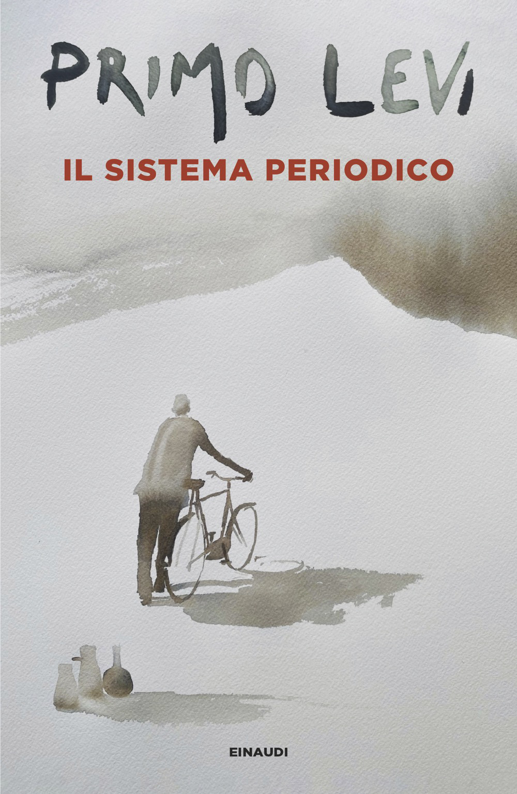
Il sistema periodico
Note sul riferimento
Copertina: Einaudi · Einaudi tascabili, Scrittori · 2026
Copertina autentica dell’edizione di riferimento, non attribuita all’esemplare del video.
Il volume è nominato. Il passaggio sulla diversità e sull’uniformità imposta dal fascismo riprende il racconto «Zinco».
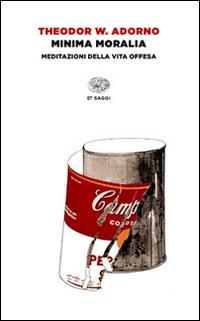
Minima moralia
Identificazione probabile
Note sul riferimento
Copertina: Einaudi, 2015
La «vita danneggiata» allude con buona probabilità al sottotitolo di Minima moralia.
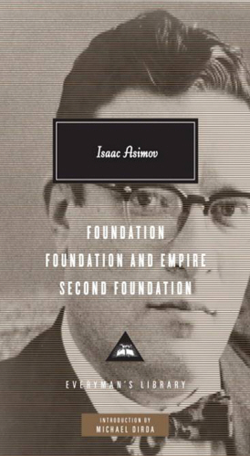
Trilogia della Fondazione (Foundation Trilogy)
Identificazione probabile
Note sul riferimento
Copertina: Everyman’s Library · omnibus inglese · 2010
Copertina autentica dell’omnibus dei tre romanzi, con introduzione di Michael Dirda. Non è la copertina del solo primo volume e non identifica l’esemplare usato nel video.
La Fondazione di Asimov è evocata nella digressione sulla fantascienza; il discorso non precisa il volume o l’episodio del ciclo.
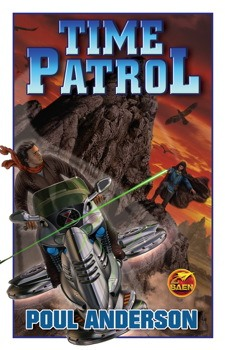
La pattuglia del tempo (Time Patrol)
Note sul riferimento
Copertina: Baen · raccolta inglese, 2006
La pattuglia del tempo è menzionata nella digressione sulla fantascienza. Il riferimento riguarda il ciclo narrativo, senza precisare un singolo racconto o l’edizione.
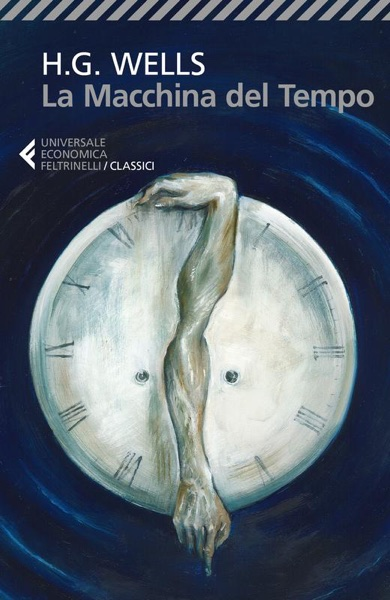
La macchina del tempo
Identificazione probabile
Note sul riferimento
Copertina: Feltrinelli · Universale Economica, I classici
L’allusione al classico di Wells con i Morlock identifica La macchina del tempo. Il titolo non è pronunciato.
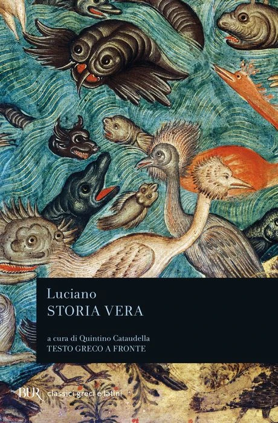
Storia vera (Una storia vera / Verae historiae)
Identificazione probabile
Note sul riferimento
Copertina di un’edizione italiana dell’opera: BUR, a cura di Quintino Cataudella, testo greco a fronte; ISBN 9788817167512, edizione a catalogo dal 1990
Copertina attuale associata dall’editore all’ISBN 9788817167512. Il video non identifica questa edizione; la data di ingresso in catalogo non certifica che la grafica attuale fosse identica nel 1990.
Luciano di Samosata e il viaggio sulla Luna rimandano alla Storia vera, evocata come antecedente fantastico.
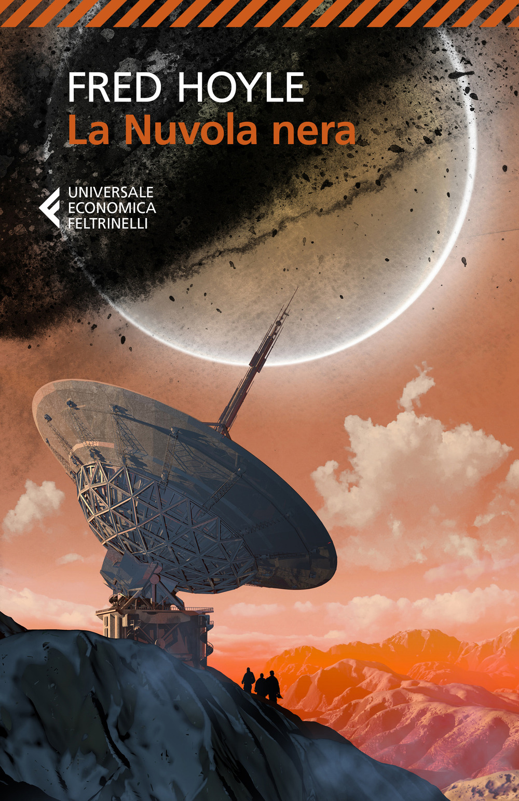
La nuvola nera
Note sul riferimento
Copertina: Feltrinelli · Universale Economica · 2020
Copertina autentica dell’edizione di riferimento, controllata visivamente. Non identifica l’esemplare letto o citato nel video.
Romanzo e autore sono nominati nella digressione sui rapporti tra ricerca scientifica e fantascienza.
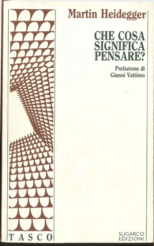
Che cosa significa pensare?
Note sul riferimento
Copertina: SugarCo · Tasco · edizione di riferimento
Si pronuncia Was heißt Denken? e se ne parafrasa l’avvio, a partire da ciò che dà da pensare.
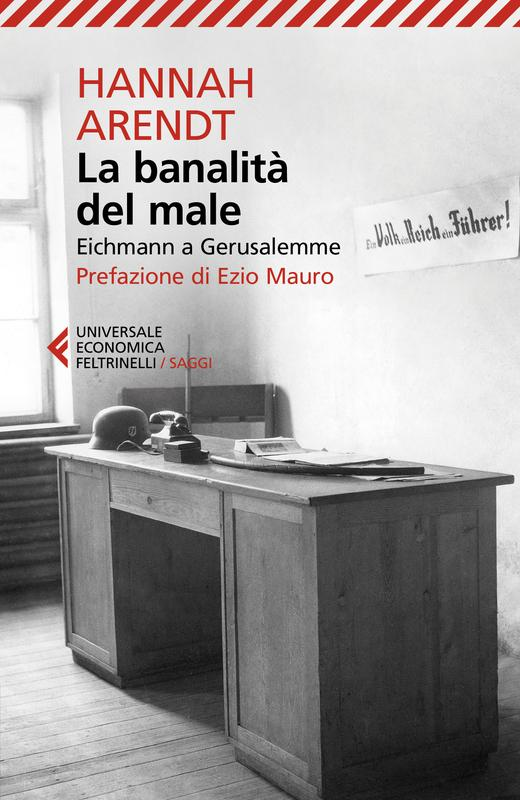
La banalità del male. Eichmann a Gerusalemme
Identificazione probabile
Note sul riferimento
Copertina: Feltrinelli · Universale Economica Saggi · 2023
Immagine autentica dell’opera, controllata visivamente; l’edizione di riferimento non è attribuita al filmato.
Il riferimento a Eichmann e all’incapacità di pensare è accostato al resoconto di Arendt sul processo. La lettura critica espressa nel seminario è attribuita alla discussione.
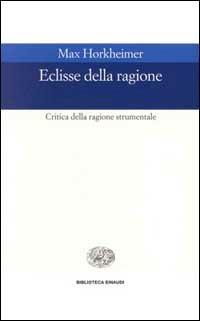
Eclisse della ragione. Critica della ragione strumentale
Identificazione probabile
Note sul riferimento
Copertina: Einaudi, Biblioteca Einaudi, 2000, traduzione di Elena Vaccari Spagnol, ISBN 9788806154370. Il titolo è anche catalogato con la variante Eclissi; la copertina acquisita reca Eclisse. Originale inglese Eclipse of Reason, 1947.
Copertina autentica Einaudi bianca con fascia blu, autore, titolo e sottotitolo leggibili. Non è la copertina del diverso Crepuscolo. Il collegamento all’editore Bloomsbury verifica l’opera originale, mentre la copertina italiana proviene da IBS.
Horkheimer e la ragione strumentale sono richiamati nel confronto con Arendt. Eclisse della ragione è un rinvio tematico, poiché il titolo non è enunciato.
Fonti e approfondimenti (13)
- Platone, Repubblica VI, 509d–511e · il testo della linea divisa ↗
- Plotino, Enneadi VI.9.4 · il passo sull’insegnamento e la visione ↗
- Kurt Gödel, articolo originale del 1931 · Springer ↗
- Alan Turing, On Computable Numbers · Proceedings of the London Mathematical Society ↗
- Alan Turing, Systems of Logic Based on Ordinals · estratto conservato al King’s College ↗
- Paul J. Cohen, The Independence of the Continuum Hypothesis · PNAS ↗
- Andrew Wiles, articolo del 1995 · Annals of Mathematics ↗
- Richard Taylor e Andrew Wiles, articolo complementare · Annals of Mathematics ↗
- Nelson Goodman, Fact, Fiction, and Forecast · Harvard University Press ↗
- Darrell Huff, How to Lie with Statistics · W. W. Norton ↗
- Primo Levi, «Zinco» · Centro Internazionale di Studi Primo Levi ↗
- Porfirio, Isagoge · edizione storica digitalizzata dalla Bayerische Staatsbibliothek ↗
- Evelyn Beatrice Hall, The Friends of Voltaire · fonte della formula sulla libertà di parola ↗